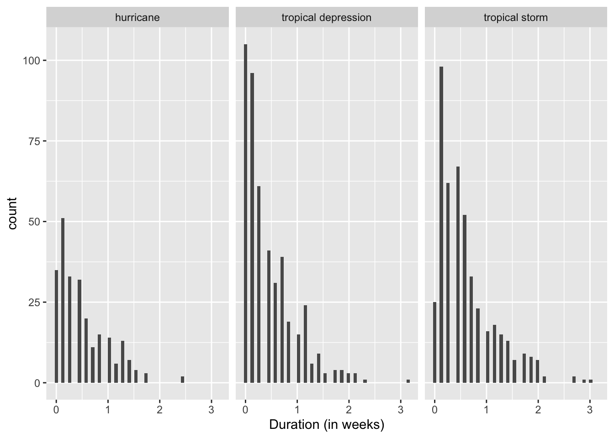
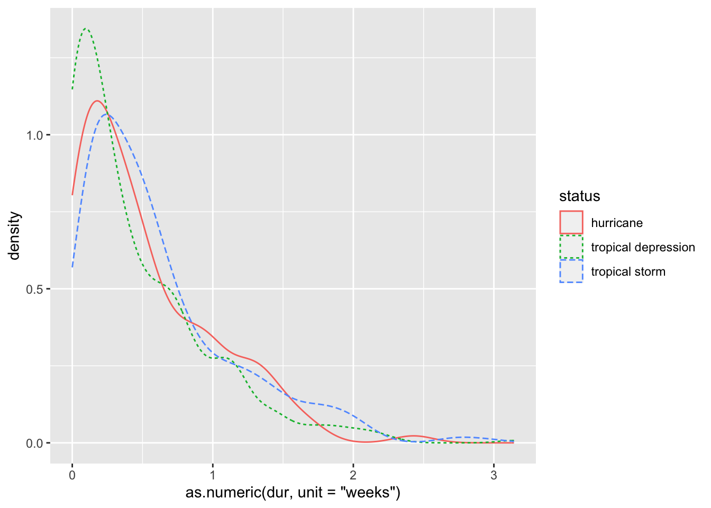

Chapter 2 EDA 2 - Time Series
2.1 Coercing time variables to dates
We are going to look at storms. To motivate this discussion, let’s explore the distribution of storm duration by status (hurricane, tropical depression, tropical storm). To get duration, we should first make sure we have a date variable that we can use. We will do this using the lubridate package and the function mdy.
storms2 = storms %>%
# first concatenate the month, day, year -> then coerce it to a date using mdy
mutate(date_mdy = mdy( str_c(month, day, year, sep = "/")) )Now, lets get the duration for each storm by name and status. This new variable will be a data structure called difftime.
storms3 = storms2 %>%
group_by(name, year, status) %>%
summarise(dur = max(date_mdy) - min(date_mdy), .groups = "drop") Finally, let’s visualize the distribution for each storm type.
ggplot(storms3, aes(x = as.numeric(dur, unit = "weeks"))) +
geom_histogram(bins = 50) +
facet_wrap( ~ status) +
xlab("Duration (in weeks)")
This is a little hard to differentiate. Let’s plot them all on the same plot instead.
ggplot(storms3, aes(x = as.numeric(dur, unit = "weeks"), color = status)) +
geom_density(aes(linetype = status))
2.2 Assignment 2
How many storm names are there?
What year had the largest number of hurricanes?
What is the median number of tropical storms per year?
What year had the fewest number of tropical depressions?
How has the number of storms (by each type) per year changed over time? Use a plot to answer this question using
geom_line.How has the number of category 5 hurricanes per year changed over time? Use a plot to answer this question using
geom_line.